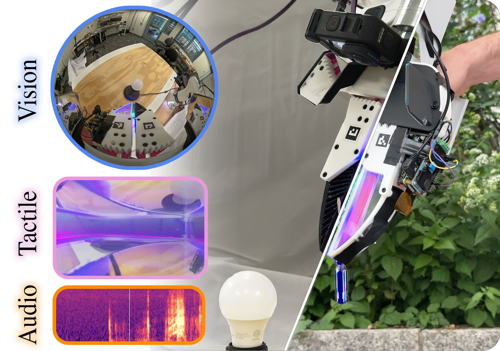
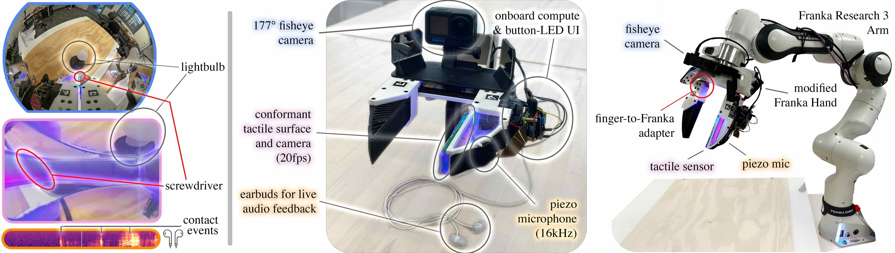
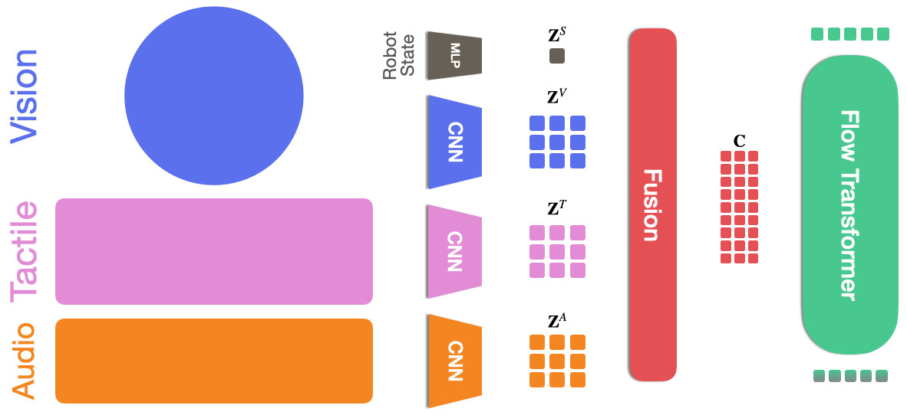
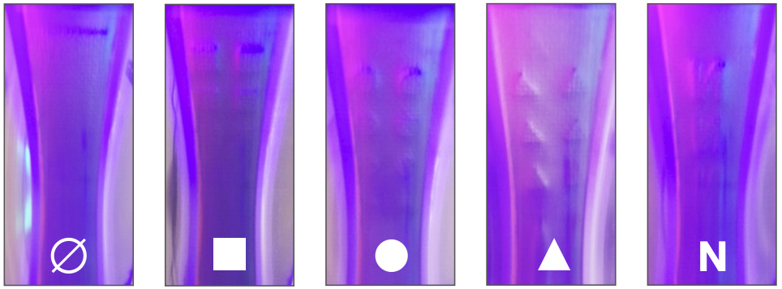
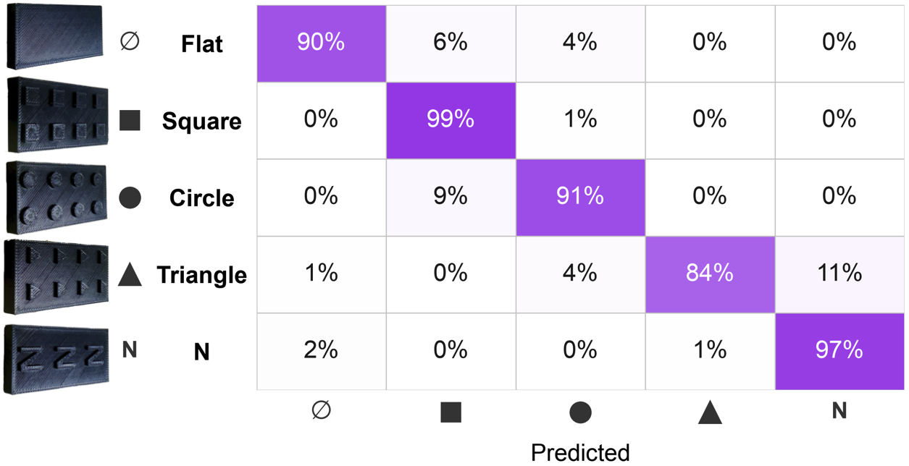
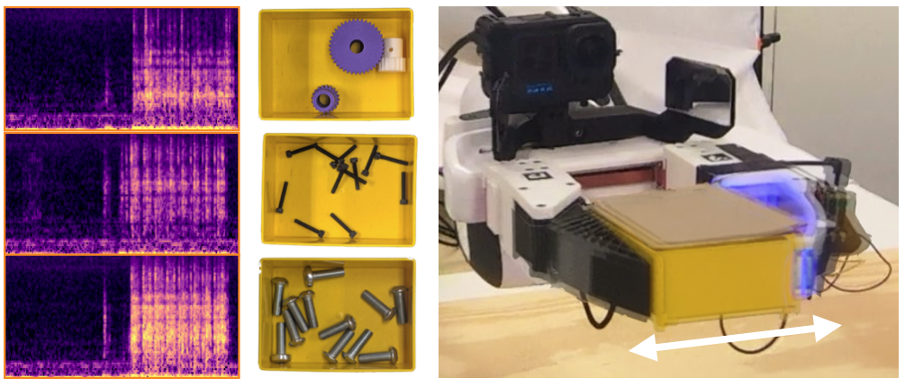
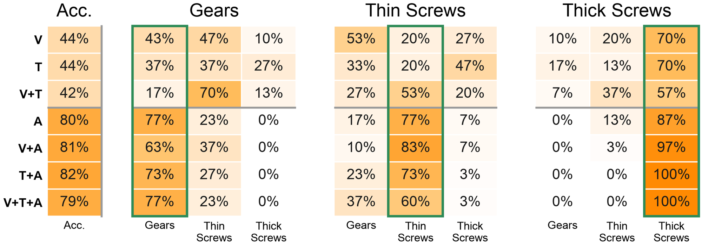
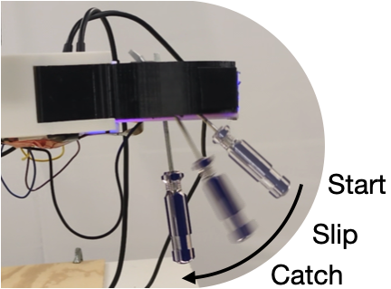
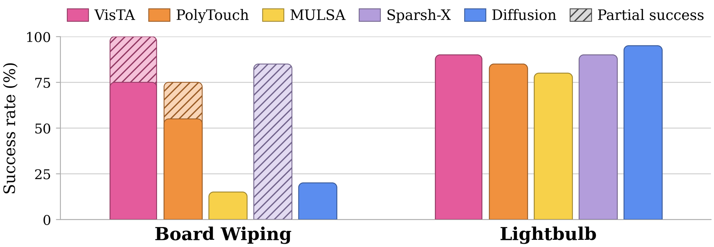

Accessible Visual–Tactile–Audio Data Collection for Object Inference and Manipulation
*Equal contribution ·
1Center for Robotics and Biosystems, Northwestern University
2Interactive Robot Perception & Learning (PEARL) Lab, TU Darmstadt ·
3Hessian.AI ·
4Robotics Institute Germany

Humans typically rely on vision, touch, hearing, and proprioception to perceive contact and adapt their actions during manipulation. Providing robots with comparable responsiveness therefore requires hardware that can retain and use these complementary sensory signals. Most imitation-learning systems, however, observe demonstrations primarily through vision and proprioception, limiting access to contact information that is difficult to infer visually.
We present PolyUMI, an open-source platform for scalable visual--tactile--audio demonstration collection and robot deployment. Its lightweight, wireless handheld gripper records synchronized wrist-camera, optical tactile, contact-audio, and proprioceptive observations without requiring a tethered workstation. The same sensing finger can be transferred to the robot end effector, preserving the sensing geometry between demonstration collection and policy execution.
To effectively use these heterogeneous observations, we further introduce VisTA, a token-level multimodal policy that integrates information across sensors and time to predict contact-aware robot actions. Experiments spanning object inference, slip control, and contact-rich manipulation show that touch and audio reveal task-relevant information beyond vision and that VisTA is competitive with or outperforms existing multimodal policies.
Together, PolyUMI and VisTA provide an accessible pipeline for collecting multimodal demonstrations and learning policies that perceive physical interaction beyond vision.
A handheld gripper for collecting demonstrations and a robot end-effector for executing policies — built around one sensing finger that moves between them in about ten minutes.

The finger pairs an optical tactile sensor with a contact microphone in one module. An internal camera watches a deformable reflective surface through a curved mirror, giving a near-overhead view of a large contact region; the surface is seven layers of VHB tape coated in aluminium powder and sealed with medical tape. Dynamic lighting compensation keeps it usable across environments, which matters for in-the-wild collection.
| Modality | Sensor | Output |
|---|---|---|
| Tactile | Optical finger | 20 fps, 1152 × 648 MJPEG |
| Audio | Contact mic | 16 kHz mono PCM |
| Vision | GoPro Hero 12 + fisheye | 60 fps, 1920 × 1080 MP4 |
| Proprioception | SLAM / ArUco | 6-DoF pose + gripper width |
The design uses modular components and minimal software dependencies, so the setup effort to deploy the system stays low.
| Component | Hardware | Assembly |
|---|---|---|
| Robot end-effector | $742.48 | 30 min |
| Handheld UMI gripper | $700.27 | 2 h |
| Multimodal sensing finger | $235.96 | 4 h |
PolyUMI is the only handheld interface that collects synchronized vision, touch and contact audio — and it adds live audio monitoring, so the demonstrator hears contact while recording.
| Method | Vision | Tactile | Audio | Open source | Cable free | Live feedback |
|---|---|---|---|---|---|---|
| UMI | ✓ | ✗ | ✗ | ✓ | ✓ | ✗ |
| FastUMI | ✓ | ✗ | ✗ | ✓ | ✗ | ✗ |
| ViTaMin | ✓ | ✓ | ✗ | ✗ | ✓ | ✗ |
| Actuated UMI | ✓ | ✓ | ✗ | ✓ | ✓ | ✗ |
| ManiWAV | ✓ | ✗ | ✓ | ✓ | ✓ | ✗ |
| TacThru | ✓ | ✓ | ✗ | ✓ | ✗ | ✗ |
| Touch in the Wild | ✓ | ✓ | ✗ | ✓ | ✗ | ✓ |
| PolyUMI (ours) | ✓ | ✓ | ✓ | ✓ | ✓ | ✓ |
A token-level fusion policy. Instead of pooling one feature per sensor, VisTA keeps local tactile deformation, short auditory events and visual scene structure as separate tokens and lets attention mix them across sensors, space and time.

Wrist camera and tactile images over a history of two timesteps, each resized to 224 × 224 and encoded to 98 tokens. Contact audio becomes a log-Mel spectrogram over roughly the last half second, encoded to 96 tokens. The robot state goes through an MLP. Modality-specific spatial embeddings and shared temporal embeddings keep the origin and time index of every token.
The policy predicts a chunk of 16 actions, each a 3D translation, a 6D rotation and a relative gripper-width command, expressed relative to the current end-effector pose. On the arm, 10 Hz commands are interpolated into joint torques at 1 kHz by a Cartesian impedance controller for compliant manipulation.
Three questions. Do touch and audio expose object properties that vision misses? Do they give precise enough feedback for closed-loop slip control? And do they improve full manipulation behaviours?
92.3% accuracy across five surface patterns
Fine surface geometry is hard to recover visually during manipulation: the contact region is occluded by the gripper and the features are smaller than an external camera can resolve. A CNN classifier trained on single tactile images separates five 3D-printed patterns, with scenes split between training and test so no scene appears in both.


44% without audio → ~80% with it
The robot shakes a closed box containing gears, thin screws or thick screws and classifies the contents. Vision-only (44%), tactile-only (44%) and visual–tactile (42%) models land barely above the 33% chance rate. Adding contact audio lifts every sensor configuration to around 80%, with the tactile–audio models classifying thick screws perfectly — from only 20 training demonstrations per class.


8/10 with touch and audio, 2/10 with vision alone
The robot holds a screwdriver horizontally and must let it rotate to vertical by modulating grip force, without dropping it. Tighten too early and the screwdriver never reaches the target; react too late and it slips out. Doing this by teleoperation without haptic feedback is very hard, which is why the handheld platform matters for collecting the demonstrations at all.
| Sensors | Success rate |
|---|---|
| V + T + A | 8/10 |
| T + A | 7/10 |
| V + T | 3/10 |
| V + A | 3/10 |
| T | 3/10 |
| V | 2/10 |
| A | 0/10 |

Two tasks with different demands. Board wiping needs sustained contact along a visually defined line: too little contact leaves the line unerased, deviation from the line gives only partial completion. Lightbulb turning chains alignment, insertion and rotational engagement — the robot must seat a loosely inserted bulb until it switches on.

@article{hayes2026polyumi,
title = {PolyUMI: Accessible Visual-Tactile-Audio Data Collection
for Object Inference and Manipulation},
author = {Hayes, Conor W. and Krohn, Rickmer and Ramaswami, Aravind
and Ramaswami, Anunth and Dengler, Nils and Lynch, Kevin M.
and Colgate, J. Edward and Chalvatzaki, Georgia
and Elwin, Matthew L.},
journal = {arXiv preprint arXiv:2609.29760},
year = {2026}
}